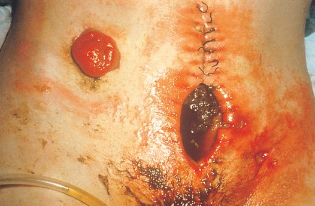
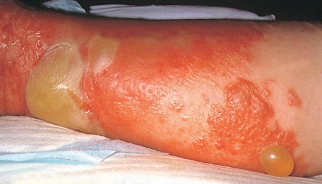
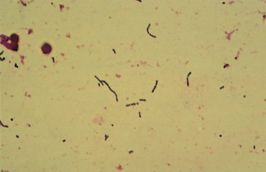
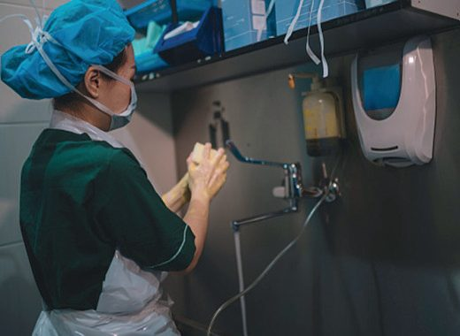

Surgical Site Infection
Summary
- Surgical site infection (SSI) is infection of the tissues, organs, or spaces exposed by surgeons during an invasive procedure, arising from invasion of organisms into tissues following a breakdown of local and systemic host defences [1][2].
- SSIs are classified into incisional (superficial, limited to skin/subcutaneous tissue; or deep, involving deeper musculofascial layers) and organ/space infections, and their development depends on the degree of microbial contamination of the wound, the duration of the procedure, and host factors such as diabetes, malnutrition, obesity and immunosuppression [2].
- The majority of wound infections arise from endogenous sources within the patient, although exogenous infection from the ward or theatre environment also occurs [1].
Definition
- The infection of a wound is defined as the invasion of organisms into tissues following a breakdown of local and systemic host defences, leading to cellulitis, lymphangitis, abscess formation or bacteraemia.
- Most surgical wound infection is superficial surgical site infection (SSSI), with the other categories being deep SSI (infection in the deeper musculofascial layers) and organ/space infection (e.g. an abdominal abscess after an anastomotic leak) [1].
- By definition, an incisional SSI has occurred if a surgical wound drains purulent material or if the surgeon judges it to be infected and opens it [2].
- A major SSI is a wound that either discharges significant quantities of pus spontaneously or needs a secondary procedure to drain it, with systemic signs such as tachycardia, pyrexia and raised white cell count.
- Minor wound infections discharge pus or infected serous fluid without excessive discomfort, systemic signs or delayed discharge [1].
Pathophysiology
- Pathogens resist host defences by releasing toxins that favour their spread, enhanced in anaerobic or necrotic wound tissue; for example, Clostridium perfringens (gas gangrene) releases hyaluronidase, lecithinase and haemolysin to spread through tissues [1].
- The human body harbours approximately 10^14 organisms, released into tissues before, during or after surgery.
- Contamination is most severe when a hollow viscus perforates [1].
- Natural protective mechanisms against infection are chemical (low gastric pH), humoral (antibodies, complement, opsonins) and cellular (phagocytes, macrophages, polymorphonuclear cells, killer lymphocytes), all of which may be compromised by surgery and its treatment [1].
- The chance of developing SSI depends on organism pathogenicity and inoculum size balanced against host response.
- Devitalised tissue, dead space, haematoma and foreign material (sutures, drains) all increase infection risk [1].
- There is up to a 4-hour interval (the "decisive period") before bacterial growth becomes established enough to cause infection after a tissue breach.
- Prophylactic antibiotic strategies become ineffective after this window, so tissue antibiotic levels should exceed the minimum inhibitory concentration (MIC90) for expected pathogens during this period [1].
- When enteral feeding is suspended perioperatively, bacteria (particularly aerobic Gram-negative bacilli) can colonise the normally sterile upper GI tract and translocate to mesenteric nodes, releasing endotoxin (lipopolysaccharide) that triggers a cytokine-mediated systemic inflammatory response (SIRS) and multiple organ dysfunction syndrome (MODS) even with negative blood cultures [1].
- At least 10^5 bacteria are generally needed to cause a wound infection, though fewer organisms suffice in the presence of a foreign body [3].
Clinical features
- Presentations include: abscess (calor, rubor, dolor, tumor, and functio laesa, per Celsus), usually forming 7–10 days after surgery, with as many as 75% of SSIs presenting after the patient has left hospital [1][3]; cellulitis and lymphangitis, non-suppurative, poorly localised spreading infection with systemic signs (chills, fever, rigors) but often negative blood cultures [1]; gas gangrene, severe local wound pain, crepitus, thin brown sweet-smelling exudate, oedema and spreading gangrene [1]; necrotising fasciitis/necrotising soft tissue infection, pain out of proportion to physical findings, mental status changes, WBC >20, thin grey foul-smelling ("dishwater") drainage, skin blistering/necrosis (overlying skin may look normal early, then progresses from pale red to purple with bullae), induration, oedema, crepitus or soft-tissue gas on X-ray, and can progress to sepsis [2][3].
- Surgical infections presenting within 48 hours of a procedure suggest bowel injury with leak or invasive soft-tissue infection with Clostridium perfringens or beta-haemolytic streptococcus, which produce exotoxins [3].
- Fournier's gangrene is a severe perineal/scrotal infection from mixed organisms in diabetic or immunocompromised patients [3].


Etiology
- Common causative organisms: Staphylococcus aureus (coagulase-positive) is the most common organism overall in SSIs; Staphylococcus epidermidis (coagulase-negative) forms biofilms on prosthetic surfaces limiting antibiotic effectiveness; Escherichia coli is the most common Gram-negative rod in surgical wound infections; Bacteroides fragilis is the most common anaerobe, acting in synergy with aerobic Gram-negative bacilli [1][3]. β-haemolytic Streptococcus (Streptococcus pyogenes, Lancefield group A) spreads via streptolysin, streptokinase and streptodornase; Streptococcus faecalis (enterococcus) often acts synergistically with other organisms [1].
- Clostridium perfringens causes gas gangrene; Clostridium tetani causes tetanus; Clostridium difficile causes pseudomembranous colitis following disruption of normal gut flora by antibiotic therapy [1].
- Necrotising fasciitis is usually caused by beta-haemolytic group A streptococcus or MRSA.
- C. perfringens myonecrosis follows a decreased tissue oxidation-reduction potential in necrotic tissue and releases alpha toxin [3].
- Risk factors are grouped as patient factors (older age, immunosuppression, obesity, diabetes mellitus, chronic inflammatory process, malnutrition, smoking, renal failure, peripheral vascular disease, anaemia, radiation, chronic skin disease, chronic Staphylococcus carriage, recent operation), local factors (open vs laparoscopic surgery, poor skin preparation, contamination of instruments, inadequate antibiotic prophylaxis, prolonged procedure, local tissue necrosis, blood transfusion, hypoxia, hypothermia), and microbial factors (prolonged hospitalisation with nosocomial organisms, toxin secretion, resistance to clearance) [2].
- Additional risk factors cited include long operations, haematoma or seroma formation, advanced age, chronic disease (COPD, renal failure, liver failure, diabetes mellitus), malnutrition, and immunosuppressive drugs [3].

Diagnosis
- Surgical wounds are classified by presumed bacterial load at surgery: Class I (clean), no infection present, only skin flora, no hollow viscus entered, infection rate 1–2%; Class II (clean-contaminated), a hollow viscus (respiratory, alimentary, genitourinary tract) is entered under controlled conditions without significant spillage, infection rate roughly 2–9.5% for non-colonic GI surgery and 4–14% for colorectal surgery; Class III (contaminated), open accidental wounds, major breaks in sterile technique, gross spillage of viscus contents, or incision through inflamed non-purulent tissue, infection rate 3.4–13.2%; Class IV (dirty), traumatic wounds with delayed treatment and necrotic tissue, wounds created in the presence of overt infection/pus, or access to a perforated viscus with high contamination, infection rate 3.1–12.8% [2].
- Similar figures are given elsewhere: clean (hernia) 2%, clean-contaminated (elective colon resection, prepped bowel) 3–5%, contaminated (e.g. gunshot wound to colon with repair) 5–10%, gross contamination (abscess) 30% [3].
- Bailey & Love gives comparable rates with and without prophylaxis: clean 1–2% either way; clean-contaminated 3% with prophylaxis vs 6–9% without; contaminated 6% vs 13–20%; dirty 7% vs 40% [1].
- Diagnosis of an established SSI is clinical: purulent drainage, or the surgeon's judgement that the wound is infected, prompting opening of the wound; culture of pus or wound fluid should ideally be taken before antibiotics are started, with the larger the pus volume sent, the more likely accurate organism identification [1][2].
- Necrotising soft-tissue infection is a clinical diagnosis suspected with sepsis, skin changes or crepitus, and pain out of proportion to examination findings.
- Imaging (X-ray for soft-tissue gas) can support but should not delay surgical exploration [2].
The surveillance definitions, and why they matter more than the clinical impression
Surgical site infection is a defined event with a date window, not a clinical impression, and the definition differs by depth. A superficial incisional SSI has a date of event within 30 days of the operative procedure (day 1 is the date of operation), involves only skin and subcutaneous tissue, and requires at least one of: purulent drainage from the superficial incision; organisms identified from an aseptically obtained specimen by culture or non-culture-based testing performed for clinical diagnosis or treatment; or a superficial incision deliberately opened by a surgeon where testing is not performed, together with at least one of localised pain or tenderness, localised swelling, erythema or heat, or a diagnosis of superficial incisional SSI by a physician [4].
A deep incisional SSI has a date of event within 30 or 90 days depending on the procedure, involves deep soft tissues such as fascial and muscle layers, and requires purulent drainage from the deep incision or a deep incision that is deliberately opened or aspirated or spontaneously dehisces, with organisms identified from the deep soft tissues, and at least one of fever above 38°C, localised pain or tenderness, or an abscess or other evidence of infection on gross anatomical, histopathological or imaging examination [4]. The third category, organ/space SSI, is defined anatomically deeper than the fascial and muscle layers [4].
- The reason to know these definitions precisely is administrative as well as clinical.
- SSI data have emerged as the leading publicly reported surgical outcome, and SSIs are tied to payment determinations [4].
- International prevention guidelines were published in 2016 and updated in 2018, and national guidance followed in 2019, yet SSIs remain prevalent despite these concerted global efforts [4].
- The whole mechanism reduces to one sentence, which is worth quoting because it organises everything else. Acquisition of an SSI is dependent on bacterial exposure via an operative incision and the host response to control that bacterial contamination [4].
- Risk factors therefore split into patient-related and procedure-related, and the emphasis in the patient list is that many of them are modifiable: obesity, immunosuppression, hyperglycaemia, tobacco use, malnutrition and staphylococcal colonisation [4].
- Obesity increases risk through decreased delivery of oxygen, nutrients and antibiotics. Hyperglycaemia impairs the innate immune response and so compromises wound healing, and patients with intraoperative and postoperative hyperglycaemia are more likely to develop SSI than those with normoglycaemia, in both diabetics and non-diabetics [4].
- Where the disease pathology allows, temporarily holding immunomodulating medication in the perioperative period may optimise infectious outcomes [4].
The contamination classification is defined by what was encountered, not by what was expected [4]:
| Class | Criteria |
|---|---|
| Clean | Atraumatic; no inflammation or infection encountered; no break in sterile technique; no entry into the gastrointestinal, genitourinary or respiratory tracts |
| Clean-contaminated | Controlled entry into the gastrointestinal, genitourinary or respiratory tracts without unusual contamination |
| Contaminated | Open, fresh, accidental wounds; major breaks in sterile technique; acute, non-purulent inflammation encountered |
| Dirty-infected | Old, traumatic wounds with retained devitalised tissue; existing clinical infection or perforated viscera |
Table reformats the operative wound contamination stratification [4]. The distinction between contaminated and dirty-infected turns on whether inflammation is non-purulent (contaminated) or whether clinical infection or perforation is already present (dirty).
- On bowel preparation, the surgical literature and the UK guidance diverge, and it is worth knowing that they do.
- Sabiston records that recent large studies have shown value in bowel preparation, that many surgical society guidelines recommend it when colorectal intervention is planned, and that combining mechanical with enteral antibiotic bowel preparation results in fewer SSIs than no preparation at all [4].
- The UK recommendation, set out below, is not to use mechanical bowel preparation routinely for the purpose of reducing SSI, which is a narrower claim about mechanical preparation alone.
Classification and severity
There is no dedicated SSI severity score. Severity is expressed through the CDC/NRC wound classification system (Classes I–IV) and associated expected infection rates detailed under Diagnosis above, and through the major/minor SSI distinction (systemic signs, need for secondary drainage procedure, and delayed discharge define a major SSI) [1][2].
Treatment and Management
- Prevention: a short preoperative hospital stay lowers risk of acquiring resistant organisms; hand hygiene (with ≥70% alcohol gel, though this does not kill C. difficile spores) is essential; preoperative skin shaving should be performed immediately before surgery (not the night before) as SSI rates after clean surgery may double with night-before shaving due to enhanced bacterial colonisation of minor skin injury, clippers are preferred over razors [1][3].
- Skin preparation uses chlorhexidine or povidone-iodine; alcohol-based skin preparation achieves >95% reduction in bacterial count [1].
- Theatre discipline (minimising staff numbers/movement, laminar flow ventilation, gentle tissue handling, avoiding dead space/haematoma) reduces infection.
- There is high-level evidence that perioperative avoidance of hypothermia and use of supplemental oxygen during recovery significantly reduce SSI rates [1].
- The CDC's 2017 SSI prevention guidelines recommend maintaining perioperative blood glucose <200 mg/dL (11.1 mmol/L), and support increased FiO2 during and after surgery in patients with normal pulmonary function under general anaesthesia, although evidence on hyperoxia's benefit is mixed [2].
- Similarly, keeping glucose 80–120 mg/dL, keeping the patient warm (OR at 70°F, forced-air warming), and chlorhexidine skin preparation with iodine-impregnated drapes are cited as SSI-prevention measures [3].
- Prophylactic antibiotics are indicated for clean-contaminated and contaminated operations and whenever a prosthesis is implanted, but have limited value in non-prosthetic clean surgery where baseline infection rates are already low; they should be given intravenously at induction of anaesthesia so that maximal tissue levels are present at incision, repeated at 4-hourly intervals in long operations or with excessive blood loss, and not continued after surgery (no evidence of benefit, and continuation promotes resistance) [1].
- Prophylactic antibiotics should be given within 1 hour of incision and stopped within 24 hours of the end of the operation (48 hours for cardiac surgery) [3].
- Patients with valvular heart disease or an implanted vascular/orthopaedic prosthesis should receive prophylactic antibiotics for dental, urological or open visceral surgery to prevent bacteraemic seeding [1].
- Treatment of an established SSI: if under tension or clearly suppurating, sutures/clips should be removed with curettage to allow drainage; heavily contaminated wounds are best managed by delayed primary or secondary closure, or left to heal by secondary intention; abscess cavities need drainage (percutaneous/ultrasound-guided where possible) and, if left open to drain freely, do not require additional antibiotics, antibiotics are used if the cavity is closed after drainage [1].
- Empirical antibiotic choice should be based on the likely spectrum of organisms and local policy, then refined by culture and sensitivity, typically available in 2–3 days.
- A narrow-spectrum agent treats a known sensitive organism (e.g. vancomycin/teicoplanin for MRSA), while broad-spectrum combinations (e.g. teicoplanin or meropenem) are used when multiple synergistic gut organisms are suspected, such as after perforated or ischaemic bowel surgery [1].
- Topical antiseptics should be used only briefly on heavily contaminated wounds as they impair epithelial ingrowth and wound healing [1].
- Necrotising soft-tissue infection requires immediate surgical exploration with radical debridement of affected tissue, antibiotics alone are not sufficient treatment [2][3].
- High-dose penicillin is used for confirmed group A streptococcal or clostridial necrotising infection, with broader-spectrum cover if polymicrobial infection is suspected [3].
- Gas gangrene requires large-dose intravenous penicillin and aggressive debridement [1].
The evidence-supported prevention bundle
- Surgical site infection affects between 0.5% and 3% of patients having a surgical procedure and can increase hospital length of stay by 7 to 11 days [5].
- A 2023 review identified six prevention strategies supported by the literature: (1) avoidance of razors for hair removal, using clippers instead; (2) decolonisation with intranasal antistaphylococcal agents and antistaphylococcal skin cleansers for high-risk procedures; (3) chlorhexidine gluconate with alcohol-based skin preparation; (4) maintenance of normothermia with active warming to keep core temperature above 36°C; (5) perioperative glycaemic control, keeping glucose below 150 mg/dL; and (6) negative-pressure wound therapy [5].
- Guidelines also support an appropriate preoperative antibiotic dose, timing and choice based on the procedure [5].
- Adherence is the weak link rather than knowledge, and electronic medical record systems providing automated decision support and reminders have been shown to improve compliance with several of these steps [5].

NG125 is the UK surgical site infection guideline, and the fastest way to hold it is as a list of things it tells you not to do.
| Phase | Do | Do not |
|---|---|---|
| Preoperative | Shower or bath with soap the day before or the day of surgery (1.2.1). Consider nasal mupirocin with a chlorhexidine body wash where S. aureus is a likely cause, determined locally by procedure type, patient risk factors, the increased risk of side effects in preterm infants, and the potential impact of infection (1.2.2). If hair must be removed, use electric clippers with a single-use head on the day of surgery (1.2.5) | Do not use hair removal routinely (1.2.4); do not use razors, which increase SSI risk (1.2.5); do not use mechanical bowel preparation routinely (1.2.9) |
| Prophylaxis | Give before clean surgery involving a prosthesis or implant, clean-contaminated surgery and contaminated surgery (1.2.12). Consider a single intravenous dose on starting anaesthesia, but earlier where a tourniquet is used (1.2.15). Repeat the dose when the operation is longer than the antibiotic's half-life (1.2.16). Give treatment in addition to prophylaxis for a dirty or infected wound (1.2.17). Inform the patient beforehand if prophylaxis will be needed, and afterwards if antibiotics were given during the operation (1.2.18) | Do not use prophylaxis routinely for clean non-prosthetic uncomplicated surgery (1.2.13) |
| Theatre discipline | Wash hands before the first operation with an aqueous antiseptic surgical solution and a single-use brush or pick for the nails; before subsequent operations use either an alcoholic hand rub or an antiseptic surgical solution, washing again with antiseptic solution if hands are soiled (1.3.1, 1.3.2). Remove hand jewellery, artificial nails and nail polish (1.2.10, 1.2.11). Sterile gowns throughout; consider two pairs of gloves where glove perforation risk is high and contamination would be serious (1.3.5, 1.3.6) | Keep movements in and out of the operating area to a minimum (1.2.8) |
| Intraoperative | Prepare the skin immediately before incision (1.3.7). If an incise drape is required, use an iodophor-impregnated one unless iodine-allergic (1.3.4). Consider triclosan-coated sutures, especially in paediatric surgery (1.3.20). Consider gentamicin-collagen implants in cardiac surgery (1.3.19). Cover the incision with an appropriate interactive dressing at the end of the operation (1.3.22) | Do not use non-iodophor-impregnated incise drapes routinely, as they may increase SSI risk (1.3.3). Do not use diathermy for the surgical incision (1.3.11). Do not use wound irrigation (1.3.16) or intracavity lavage (1.3.17). Do not give insulin routinely to people without diabetes to reduce SSI risk (1.3.15). Apply an antiseptic or antibiotic to the wound before closure only as part of a clinical research trial (1.3.18) |
Table reformats the NG125 recommendations [6].
- The antiseptic choice is a four-step cascade, not a preference.
- First choice is an alcohol-based solution of chlorhexidine, unless contraindicated or the surgical site is next to a mucous membrane; next to a mucous membrane, aqueous chlorhexidine; if chlorhexidine is contraindicated, alcohol-based povidone-iodine; and if both an alcohol-based solution and chlorhexidine are unsuitable, aqueous povidone-iodine [6].
- Two safety clauses travel with it: be aware of the risk of severe chemical injuries from chlorhexidine, both alcohol-based and aqueous, in preterm babies, and where diathermy will be used, dry the antiseptic by evaporation and avoid pooling of alcohol-based preparations [6].
- Two intraoperative recommendations are about the patient's physiology rather than about asepsis, and they connect this guideline to the hypothermia one. Maintain patient temperature in line with the NICE guideline on hypothermia in adults having surgery, and maintain optimal oxygenation, giving sufficient oxygen during major surgery and in the recovery period to ensure a haemoglobin saturation of more than 95% [6].
- Adequate perfusion should likewise be maintained [6].
- The hypothermia guideline supplies the operative numbers: warm from induction with a forced-air device if anaesthesia will exceed 30 minutes, keep the ambient theatre temperature at least 21°C while the patient is exposed, and warm intravenous fluids of 500 ml or more and all blood products to 37°C [7].
Where wound healing is likely to be a problem, NG125 asks for a system rather than a product. Use a structured approach to care to improve overall management of surgical wounds, including preoperative assessments to identify people with potential wound healing problems, supported by enhanced education of healthcare workers, patients and carers and by sharing of clinical expertise [6].
Surgeries
Surgical management of SSI centres on source control rather than a defined "operation": incision and drainage (with curettage of the cavity) for abscesses; removal of sutures/clips with wound de-roofing for infected surgical incisions; delayed primary or secondary closure for heavily contaminated wounds; and radical surgical debridement (incision with direct visualisation of deep soft tissue, fascia and muscle, and resection of affected tissue) for necrotising soft-tissue infection, which may require repeated debridement [1][2]. Fulminant Clostridium difficile (pseudomembranous) colitis with perforation requires emergency total abdominal colectomy with ileostomy [3].
Complications
- Local complications include chronic abscess, antibioma (partly sterilised abscess), and sinus/fistula formation, particularly with Mycobacterium or Actinomyces infection [1].
- Uncontrolled spreading infection can progress to bacteraemia and a systemic inflammatory response.
- Gas gangrene can cause early systemic circulatory collapse and organ failure if not promptly treated [1].
- Necrotising fasciitis and other necrotising soft-tissue infections are associated with sepsis and septic shock, often without an obvious cause identified initially [2].
- Gut colonisation and bacterial translocation can precipitate SIRS and multiple organ dysfunction syndrome (MODS) [1].
- Antibiotic overuse or inappropriate switching promotes antibiotic resistance and risks complications such as C. difficile enteritis [1].
Prognosis
- Since the introduction of prophylactic antibiotics, SSI in contaminated, immunosuppressed or prosthetic-surgery patients has become the exception rather than the rule, and faecal peritonitis is no longer inevitably fatal, incisions made in the presence of such contamination can heal primarily without infection in over 90% of patients with appropriate antibiotic therapy [1].
- Two-thirds of SSIs after colorectal surgery may present after hospital discharge, underscoring the importance of follow-up [2].
- Sepsis mortality overall has fallen to under 30% with improvements in care delivery and evidence-based treatment strategies such as the Surviving Sepsis Campaign guidelines [2].
- Severe forms of tetanus requiring ventilation are associated with high mortality [1].
References
- Bailey & Love's Short Practice of Surgery, 28th ed., Ch. 5 Surgical infection
- Schwartz's Principles of Surgery: ABSITE and Board Review, Ch. 6, citing Schwartz 11th ed., p. 169
- The ABSITE Review, 2022, Ch. 5 Infection
- Sabiston Textbook of Surgery, 22nd ed., Ch. 25 Surgical Site Infections, Table 25.1
- Sabiston Textbook of Surgery, 22nd ed., Ch. 9 Safety in the Surgical Environment
- NICE Guideline NG125: Surgical site infections: prevention and treatment. National Institute for Health and Care Excellence, London, UK, 2019, updated 2020., 1.2.1 to 1.3.22; 1.3.8; 1.3.9, Table 1; 1.3.10; 1.3.12; 1.3.13; 1.3.14; 1.4.11 www.nice.org.uk
- NICE Clinical Guideline CG65: Hypothermia: prevention and management in adults having surgery. National Institute for Health and Care Excellence, London, UK, 2008, updated 2016., 1.3.4; 1.3.6; 1.3.7 www.nice.org.uk